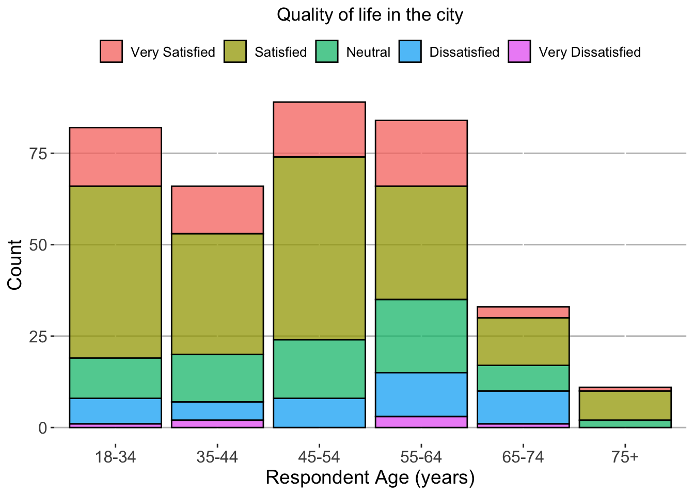
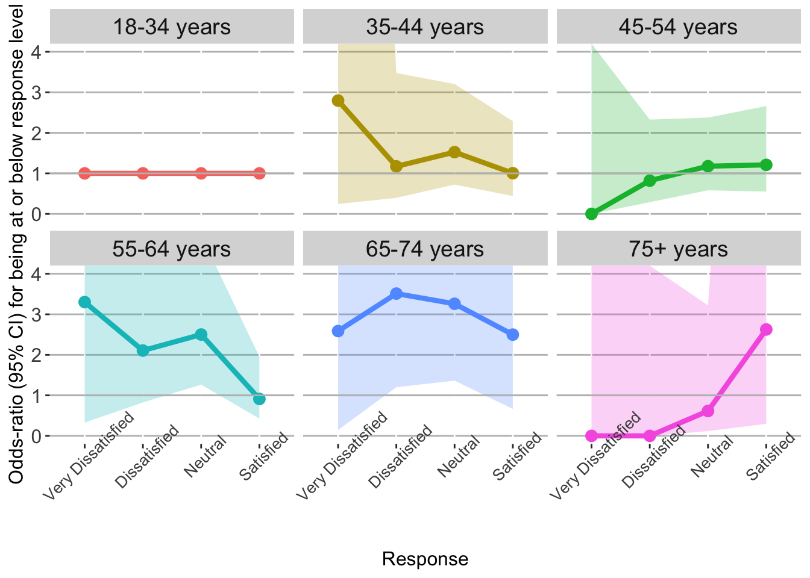

# Load packageslibrary(tidyverse)# Import the datasetdat <-read_delim(file ="https://query.data.world/s/zr3uaxpaagbzddttoreosktj2zy7lm?dws=00000", delim =";",na =c("", " ", "NA", "N/A")) |># Keep a few columnstransmute(QOL = q3f_quality_of_life_in_city |>factor() |>fct_relevel("Very Dissatisfied","Dissatisfied","Neutral","Satisfied","Very Satisfied" ),Age =str_remove(`18_34_years`, "(?i)\\syears$") |>factor(),Income = q38_annual_household_income |>factor() |>fct_relevel("Under $30,000","$30,000 to $59,999","$60,000 to $99,999","$100,000 or more" ),Sex = q34_respondents_gender ) |># Remove missing casesna.omit()
Suppose we are interested in understanding the relationship between resident age and their perceived quality of life in the city, after adjusting for gender and annual household income. We have the following observed distribution (note that we’ve removed missing data for simplicity):
Code
dat |># Compute group summariessummarize(N =n(),.by =c( QOL, Age ) ) |># Flip the ordermutate(QOL =fct_rev(QOL) ) |># Make a plotggplot() +geom_col(aes(x = Age,y = N,fill = QOL ),color ="black",alpha = .75 ) +theme(panel.background =element_blank(),panel.grid.major.y =element_line(color ="gray"),legend.position ="top",legend.title =element_blank(),legend.text =element_text(size =10),axis.title =element_text(size =14),axis.text =element_text(size =12),plot.title =element_text(hjust = .5) ) +xlab("Respondent Age (years)") +ylab("Count") +labs(title ="Quality of life in the city")

Overall, it looks like older respondents tend to report more pessimistic views of quality of life.
Forming a model
A typical approach for modeling likert-like data is to use a proportional-odds logistic regression model. It is an extension of the widely-used binary logistic regression model, with one key assumption: the ratio of odds between two groups (e.g., ages 35-44 versus 18-34) of being at or above a response level (e.g., satisfied or very satisfied versus neutral, dissatisfied, or very dissatisfied) are proportional (i.e., the same) regardless of where we make that comparison in the outcome. So this odds ratio would also be the same if we instead compared, for example, very satisfied versus everything else.
What does that mean?
Let’s clarify this by using our model output directly. We’ll fit the model, adjusted for annual household income and gender, using the MASS::polr function. The age group 18-34 will serve as the reference category in which all other age groups will be compared against. Note: By default the package computes odds ratios in the opposite direction to what we what we want, so we invert them.
Code
# Fit the modelmod <- MASS::polr(formula = QOL ~ Age + Income + Sex,data = dat,Hess =TRUE )# Make a table of odds-ratiosmod$coefficients |># Convert to data frameenframe(name ="Term",value ="Estimate" ) |># Join to get the CIinner_join(y =# Get the 95% confidence intervalsconfint(mod) |># Convert to tibble, add the coefficient namesas_tibble() |>add_column(Term =names(mod$coefficients)),by ="Term" ) |># Filter to age factor onlyfilter(str_detect(Term, "^Age")) |># Clean upmutate(Term =str_remove(Term, "^Age"),across(where(is.numeric), \(x) sprintf("%.2f", 1/exp(x)) ) ) |># Renamerename(`Age (years)`= Term,`Odds-ratio`= Estimate,Lower =`97.5 %`,Upper =`2.5 %` ) |># Change locationrelocate(Lower, .before = Upper) |># Add the reference rowadd_row(`Age (years)`="18-34",`Odds-ratio`="-",Lower ="-",Upper ="-",.before =1 ) |># Make a table knitr::kable(format ="html") |> kableExtra::kable_styling() |> kableExtra::add_header_above(c("", "", "95% CI"=2))
95% CI
Age (years)
Odds-ratio
Lower
Upper
18-34
-
-
-
35-44
1.24
0.67
2.30
45-54
1.13
0.64
1.98
55-64
1.74
0.97
3.12
65-74
3.02
1.40
6.54
75+
0.93
0.30
2.88
Generally, the estimates pan out roughly how we suspected. In particular, the estimated odds of worse perceived quality of life in the city for 65-74 year olds are 3 times that of 18-34 year olds, after adjusting for annual household income and gender (with a 95% confidence interval of 1.4 to 6.5).
Again, this interpretation is assumed to hold true if “worse” is defined as very dissatisfied versus everything else, or very dissatisfied through satisfied versus very satisfied, and everything in between.
Does the assumption hold?
The question becomes whether that big assumption of proportional-odds actually holds. We may have reason to think, from the data or gut instinct, that it might not. Well, one simple way to check is by directly assessing what it implies.
Continue…
We said earlier that the model assumes the same odds ratios for any mutually exclusive comparison of the ordered response categories. Thus, we can free up this constraint by thinking of constructing a collection of binary logistic regression models: one for each of those ordinal comparisons. Specifically,
Very Dissatisfied versus everything else
Very Dissatisfied or Dissatisfied versus everything else
Very Dissatisfied, Dissatisfied, or Neutral versus Satisfied or Very Satisfied
Very Dissatisfied through Satisfied versus Very Satisfied
Then, we simply just look to see if the resulting odds ratios are reasonably similar across all of those models. If so, then we can be somewhat confident that it can be reduced to a single model, and stick with our original proportional-odds estimates.
My preference is to do this in a plot.
Making the plot
We’ll cycle through the response categories, iteratively define the binary outcomes as described above, and then fit a logistic regression model for each definition. Once we do this, we get the following plot:
Code
# Set the number of comparisonsn_comp <-n_distinct(dat$QOL) -1# Make each data set1:n_comp |># For each setmap_df(function(.index) {# Extract the current response set temp_resp <-levels(dat$QOL)[1:.index]# Create binary outcome in the data temp_dat <- dat |># Create targetmutate(Response =case_when( QOL %in% temp_resp ~1,TRUE~0 ) )# Fit the binary logistic regression model temp_mod <-glm(formula = Response ~ Age + Income + Sex,data = temp_dat,family ="binomial" )# Make a table of odds-ratios temp_mod$coefficients |># Convert to data frameenframe(name ="Term",value ="Estimate" ) |># Join to get the CIinner_join(y =# Get the 95% confidence intervalsconfint.default(temp_mod) |># Convert to tibble, add the coefficient namesas_tibble() |>add_column(Term =names(temp_mod$coefficients)),by ="Term" ) |># Filter to age factor onlyfilter(str_detect(Term, "^Age")) |># Clean upmutate(Term =str_remove(Term, "^Age"),across(where(is.numeric), \(x) exp(x) ) ) |># Renamerename(Age = Term,OR = Estimate,Lower =`2.5 %`,Upper =`97.5 %` ) |># Add the reference rowadd_row(Age ="18-34",OR =1,Lower =1,Upper =1,.before =1 ) |># Attach outcome leveladd_column(QOL =levels(dat$QOL)[.index]) },.id ="Order" ) |># Make the factormutate(Order =as.numeric(Order),QOL =factor(QOL) |>fct_reorder(Order) ) |># Make a plotggplot(aes(x = QOL,y = OR,group =1 ) ) +geom_line(aes(color = Age ),linewidth =1.5 ) +geom_point(aes(color = Age ),size =3 ) +geom_ribbon(aes(ymin = Lower,ymax = Upper,fill = Age ),alpha = .25 ) +geom_hline(yintercept =1, color ="gray") +facet_wrap(~paste0(Age, " years")) +coord_cartesian(ylim =c(0, 4)) +theme(panel.background =element_blank(),panel.grid.major.y =element_line(color ="gray"),legend.position ="none",axis.title =element_text(size =12),axis.text =element_text(size =12),axis.text.x =element_text(angle =45, size =10),plot.title =element_text(hjust = .5),strip.text =element_text(size =14) ) +xlab("Response") +ylab("Odds-ratio (95% CI) for being at or below response level")

Unfortunately we’re quite plagued by variability here, especially in the lower-end (i.e., very dissatisfied versus everything else), due to scanty event volumes, but you get the picture. Actually, for 65-74 year olds, the proportional-odds assumption seems to be a reasonable one: it was estimated earlier at 3.02, and we see the point estimates across these binary models vary between 2.5-3.5.
For other age categories, it may not be so good of an assumption. It looks like 35-44 and 55-64 year olds tend to have a much higher odds of responding very dissatisfied relative to 18-34 year olds, but there is much less of a difference (in all age categories) for the odds of responding very satisfied, suggesting something like older residents may make a point to select the least favorable response but don’t see much difference between being satisfied or very satisfied.
So what do we do in practice?
First, the same proportional-odds assumptions hold for all covariates in the model, so we would also want to assess this for annual household income and gender. Second, if the assumption is not met, then we need to accommodate that by introducing more flexibility into the model. That may be by being clever with interaction terms, defining sensible groups to create, or by using separate binary models for each possible comparison, as we’ve done here. It’s really a judgement call.
Source Code
---title: "How do you assess the proportional-odds assumption? Directly."description: "A simple visual check."author: "Alex Zajichek"date: "7/19/2024"image: "feature.png"draft: falsecategories: - Regressionformat: html: code-fold: true code-tools: true---{{< video https://www.youtube.com/embed/9q_0tWT89W4 >}}This dataset comes from the [2011 Annual Resident Survey](https://data.world/durhamnc/2011-resident-survey) in Durham, NC.```{r, warning = FALSE, message = FALSE}# Load packageslibrary(tidyverse)# Import the datasetdat <- read_delim( file = "https://query.data.world/s/zr3uaxpaagbzddttoreosktj2zy7lm?dws=00000", delim = ";", na = c("", " ", "NA", "N/A")) |> # Keep a few columns transmute( QOL = q3f_quality_of_life_in_city |> factor() |> fct_relevel( "Very Dissatisfied", "Dissatisfied", "Neutral", "Satisfied", "Very Satisfied" ), Age = str_remove(`18_34_years`, "(?i)\\syears$") |> factor(), Income = q38_annual_household_income |> factor() |> fct_relevel( "Under $30,000", "$30,000 to $59,999", "$60,000 to $99,999", "$100,000 or more" ), Sex = q34_respondents_gender ) |> # Remove missing cases na.omit()```Suppose we are interested in understanding the relationship between resident age and their perceived quality of life in the city, after adjusting for gender and annual household income. We have the following observed distribution (note that we've removed missing data for simplicity):```{r}dat |># Compute group summariessummarize(N =n(),.by =c( QOL, Age ) ) |># Flip the ordermutate(QOL =fct_rev(QOL) ) |># Make a plotggplot() +geom_col(aes(x = Age,y = N,fill = QOL ),color ="black",alpha = .75 ) +theme(panel.background =element_blank(),panel.grid.major.y =element_line(color ="gray"),legend.position ="top",legend.title =element_blank(),legend.text =element_text(size =10),axis.title =element_text(size =14),axis.text =element_text(size =12),plot.title =element_text(hjust = .5) ) +xlab("Respondent Age (years)") +ylab("Count") +labs(title ="Quality of life in the city")```Overall, it looks like older respondents tend to report more pessimistic views of quality of life. # Forming a modelA typical approach for modeling [likert-like](https://en.wikipedia.org/wiki/Likert_scale) data is to use a [proportional-odds logistic regression model](https://en.wikipedia.org/wiki/Ordered_logit). It is an extension of the widely-used binary [logistic regression](https://en.wikipedia.org/wiki/Logistic_regression) model, with one key assumption: _the ratio of odds between two groups (e.g., ages 35-44 versus 18-34) of being at or above a response level (e.g., satisfied or very satisfied versus neutral, dissatisfied, or very dissatisfied) are **proportional** (i.e., the same) regardless of where we make that comparison in the outcome_. So this odds ratio would also be the same if we instead compared, for example, very satisfied versus everything else.## What does that mean?Let's clarify this by using our model output directly. We'll fit the model, adjusted for annual household income and gender, using the `MASS::polr` function. The age group 18-34 will serve as the reference category in which all other age groups will be compared against. _Note: By default the package computes odds ratios in the opposite direction to what we what we want, so we invert them._```{r, warning = FALSE, message = FALSE}# Fit the modelmod <- MASS::polr( formula = QOL ~ Age + Income + Sex, data = dat, Hess = TRUE )# Make a table of odds-ratiosmod$coefficients |> # Convert to data frame enframe( name = "Term", value = "Estimate" ) |> # Join to get the CI inner_join( y = # Get the 95% confidence intervals confint(mod) |> # Convert to tibble, add the coefficient names as_tibble() |> add_column(Term = names(mod$coefficients)), by = "Term" ) |> # Filter to age factor only filter(str_detect(Term, "^Age")) |> # Clean up mutate( Term = str_remove(Term, "^Age"), across( where(is.numeric), \(x) sprintf("%.2f", 1 / exp(x)) ) ) |> # Rename rename( `Age (years)` = Term, `Odds-ratio` = Estimate, Lower = `97.5 %`, Upper = `2.5 %` ) |> # Change location relocate(Lower, .before = Upper) |> # Add the reference row add_row( `Age (years)` = "18-34", `Odds-ratio` = "-", Lower = "-", Upper = "-", .before = 1 ) |> # Make a table knitr::kable(format = "html") |> kableExtra::kable_styling() |> kableExtra::add_header_above(c("", "", "95% CI" = 2))```Generally, the estimates pan out roughly how we suspected. In particular, the estimated odds of _worse_ perceived quality of life in the city for 65-74 year olds are 3 times that of 18-34 year olds, after adjusting for annual household income and gender (with a 95% [confidence interval](https://en.wikipedia.org/wiki/Confidence_interval) of 1.4 to 6.5). Again, this interpretation is assumed to hold true if "worse" is defined as _very dissatisfied_ versus everything else, or _very dissatisfied_ through _satisfied_ versus _very satisfied_, and everything in between.# Does the assumption hold?The question becomes whether that big assumption of proportional-odds actually holds. We may have reason to think, from the data or gut instinct, that it might not. Well, one simple way to check is by _directly_ assessing what it implies.## Continue...We said earlier that the model assumes the same odds ratios for any mutually exclusive comparison of the ordered response categories. Thus, we can free up this constraint by thinking of constructing a collection of _binary_ logistic regression models: one for each of those ordinal comparisons. Specifically,* _Very Dissatisfied_ versus everything else* _Very Dissatisfied_ or _Dissatisfied_ versus everything else* _Very Dissatisfied_, _Dissatisfied_, or _Neutral_ versus _Satisfied_ or _Very Satisfied_* _Very Dissatisfied_ through _Satisfied_ versus _Very Satisfied_Then, we simply just look to see if the resulting odds ratios are reasonably similar across all of those models. If so, then we can be somewhat confident that it _can_ be reduced to a single model, and stick with our original proportional-odds estimates.My preference is to do this in a plot.## Making the plotWe'll cycle through the response categories, iteratively define the binary outcomes as described above, and then fit a logistic regression model for each definition. Once we do this, we get the following plot:```{r, warning = FALSE, message = FALSE}# Set the number of comparisonsn_comp <- n_distinct(dat$QOL) - 1# Make each data set1:n_comp |> # For each set map_df( function(.index) { # Extract the current response set temp_resp <- levels(dat$QOL)[1:.index] # Create binary outcome in the data temp_dat <- dat |> # Create target mutate( Response = case_when( QOL %in% temp_resp ~ 1, TRUE ~ 0 ) ) # Fit the binary logistic regression model temp_mod <- glm( formula = Response ~ Age + Income + Sex, data = temp_dat, family = "binomial" ) # Make a table of odds-ratios temp_mod$coefficients |> # Convert to data frame enframe( name = "Term", value = "Estimate" ) |> # Join to get the CI inner_join( y = # Get the 95% confidence intervals confint.default(temp_mod) |> # Convert to tibble, add the coefficient names as_tibble() |> add_column(Term = names(temp_mod$coefficients)), by = "Term" ) |> # Filter to age factor only filter(str_detect(Term, "^Age")) |> # Clean up mutate( Term = str_remove(Term, "^Age"), across( where(is.numeric), \(x) exp(x) ) ) |> # Rename rename( Age = Term, OR = Estimate, Lower = `2.5 %`, Upper = `97.5 %` ) |> # Add the reference row add_row( Age = "18-34", OR = 1, Lower = 1, Upper = 1, .before = 1 ) |> # Attach outcome level add_column(QOL = levels(dat$QOL)[.index]) }, .id = "Order" ) |> # Make the factor mutate( Order = as.numeric(Order), QOL = factor(QOL) |> fct_reorder(Order) ) |> # Make a plot ggplot( aes( x = QOL, y = OR, group = 1 ) ) + geom_line( aes( color = Age ), linewidth = 1.5 ) + geom_point( aes( color = Age ), size = 3 ) + geom_ribbon( aes( ymin = Lower, ymax = Upper, fill = Age ), alpha = .25 ) + geom_hline(yintercept = 1, color = "gray") + facet_wrap(~paste0(Age, " years")) + coord_cartesian(ylim = c(0, 4)) + theme( panel.background = element_blank(), panel.grid.major.y = element_line(color = "gray"), legend.position = "none", axis.title = element_text(size = 12), axis.text = element_text(size = 12), axis.text.x = element_text(angle = 45, size = 10), plot.title = element_text(hjust = .5), strip.text = element_text(size = 14) ) + xlab("Response") + ylab("Odds-ratio (95% CI) for being at or below response level")```Unfortunately we're quite plagued by variability here, especially in the lower-end (i.e., _very dissatisfied_ versus everything else), due to scanty event volumes, but you get the picture. Actually, for 65-74 year olds, the proportional-odds assumption seems to be a reasonable one: it was estimated earlier at 3.02, and we see the point estimates across these binary models vary between 2.5-3.5. For other age categories, it may not be so good of an assumption. It looks like 35-44 and 55-64 year olds tend to have a much higher odds of responding _very dissatisfied_ relative to 18-34 year olds, but there is much less of a difference (in all age categories) for the odds of responding _very satisfied_, suggesting something like older residents may make a point to select the least favorable response but don't see much difference between being _satisfied_ or _very satisfied_.## So what do we do in practice?First, the same proportional-odds assumptions hold for all covariates in the model, so we would also want to assess this for annual household income and gender. Second, if the assumption is not met, then we need to accommodate that by introducing more flexibility into the model. That may be by being clever with interaction terms, defining sensible groups to create, or by using separate binary models for each possible comparison, as we've done here. It's really a judgement call.{{< bluesky-comments uri="at://did:plc:sh3av73hihgu72vx7k44kgv7/app.bsky.feed.post/3lc73sgvuqk2t" >}}